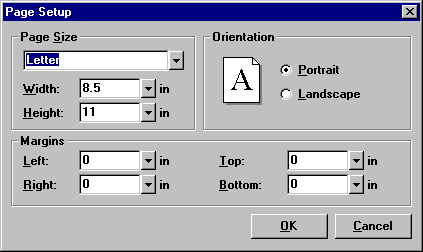

Page Setup (Format Menu) |
  
|
Page Setup (Format Menu) |
|
Icon:  . Keyboard Shortcut: ALT+O+E
. Keyboard Shortcut: ALT+O+E
Displays the Page Setup dialog, which lets you specify the paper size and margin settings for the current drawing.

Page Size: Determines the overall size of the drawing. If the drawing page size is larger than the current printer paper size, the drawing will be tiled over multiple pages when printed, and 1/4" crop marks will be printed at 5/8" from the edge of the paper, showing where you should cut each page. The right and bottom boundaries of the drawing on multiple page printouts will be indicated by a dashed line.
Width, Height: Specifies the drawing width and height in inches or millimeters. If you select one of the standard sizes above, these values are filled in automatically.
Margins (Left, Right, Top, Bottom): It is usually not necessary to enter any margins, but these inputs are provided for cases when you may want some extra space around the edges, such as when a drawing is either larger or smaller than the current printer paper. If the drawing is the same size as the current printer paper, you probably do not want to enter any margins, since doing so will force the drawing to be tiled over multiple pages on the printout.
Margins affect the amount of white space around a drawing on the printed page. You can see how the margins affect how a drawing will print by generating a print preview of the drawing.
Note that if the drawing tiles over multiple pages, margins affect only the four sides of the entire printed drawing, not each side of every sheet of paper.